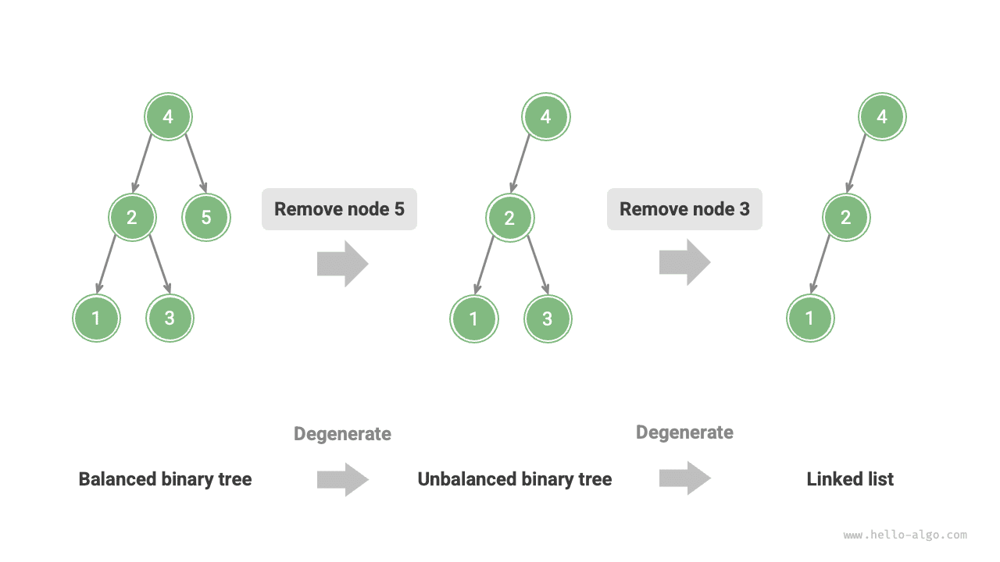
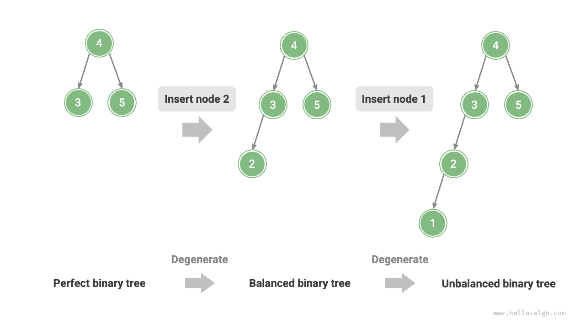
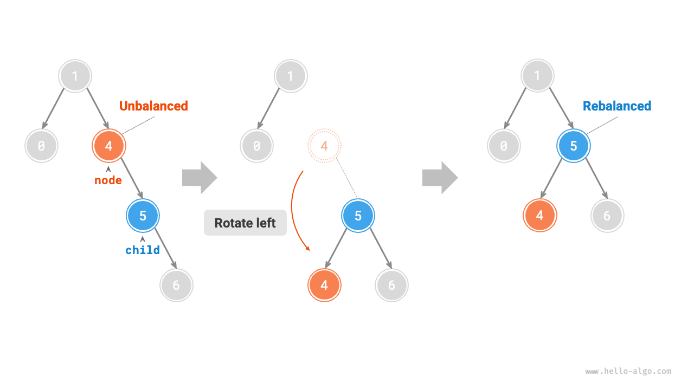
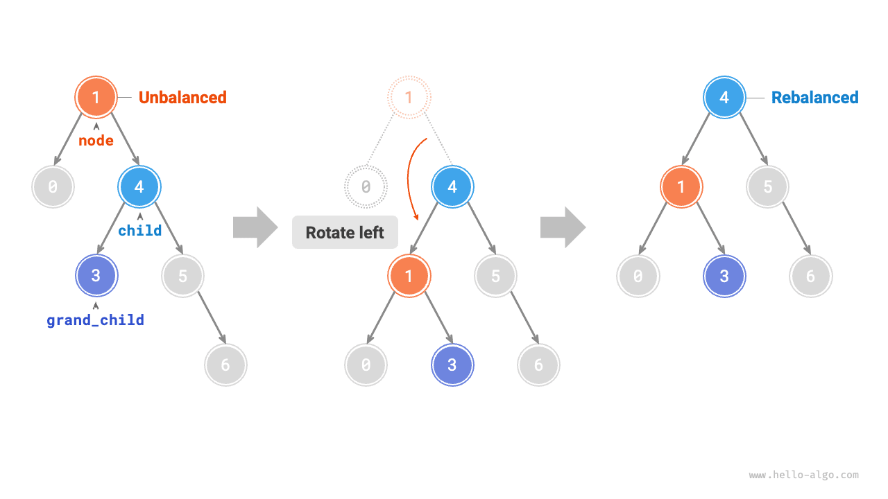

الأشجار
شجرة AVL *
ذكرنا في قسم "شجرة البحث الثنائية" أنه بعد عمليات إدراج وحذف متعددة قد تتدهور شجرة البحث الثنائية إلى قائمة مترابطة. وفي هذه الحالة يتدهور التعقيد الزمني لجميع العمليات من $O(\log n)$ إلى $O(n)$.
وكما يوضح الشكل أدناه، بعد عمليتي حذف لعقدتين، تتدهور شجرة البحث الثنائية هذه إلى قائمة مترابطة.

على سبيل المثال، في الشجرة الثنائية التامة الموضحة في الشكل أدناه، بعد إدراج عقدتين ستميل الشجرة ميلاً شديداً إلى اليسار، وسيتدهور التعقيد الزمني لعمليات البحث أيضاً.

في عام 1962، اقترح G. M. Adelson-Velsky وE. M. Landis شجرة AVL في ورقيتهما "An algorithm for the organization of information". وتصف الورقة سلسلة من العمليات التي تمنع شجرة AVL من التدهور عند إدراج العقد وحذفها، مما يحافظ على التعقيد الزمني لمختلف العمليات عند $O(\log n)$. وبعبارة أخرى، في السيناريوهات التي تتطلب عمليات إدراج وحذف وبحث وتحديث متكررة، تستطيع أشجار AVL الحفاظ على أداء فعّال باستمرار، ولذلك لها قيمة عملية كبيرة.
المصطلحات الشائعة في أشجار AVL
شجرة AVL هي في الوقت نفسه شجرة بحث ثنائية وشجرة ثنائية متوازنة، وتستوفي في آن واحد جميع خصائص هذين النوعين من الأشجار الثنائية، لذا فهي شجرة بحث ثنائية متوازنة.
ارتفاع العقدة
بما أن العمليات المتعلقة بأشجار AVL تتطلب الحصول على ارتفاعات العقد، نحتاج إلى إضافة متغير height إلى صنف العقدة:
Go
/* عقدة شجرة AVL */
type TreeNode struct {
Val int // قيمة العقدة
Height int // ارتفاع العقدة
Left *TreeNode // مرجع الابن الأيسر
Right *TreeNode // مرجع الابن الأيمن
}
TypeScript
/* عقدة شجرة AVL */
class TreeNode {
val: number; // قيمة العقدة
height: number; // ارتفاع العقدة
left: TreeNode | null; // مؤشر الابن الأيسر
right: TreeNode | null; // مؤشر الابن الأيمن
constructor(val?: number, height?: number, left?: TreeNode | null, right?: TreeNode | null) {
this.val = val === undefined ? 0 : val;
this.height = height === undefined ? 0 : height;
this.left = left === undefined ? null : left;
this.right = right === undefined ? null : right;
}
}
يشير "ارتفاع العقدة" إلى المسافة من تلك العقدة إلى أبعد عقدة ورقة عنها، أي عدد الأضلاع على المسار. ومن المهم ملاحظة أن ارتفاع عقدة الورقة هو $0$، وارتفاع العقدة الفارغة هو $-1$. سننشئ دالتين مساعدتين للحصول على ارتفاع العقدة وتحديثه:
Go
/* حدّث ارتفاع العقدة */
func (t *aVLTree) updateHeight(node *TreeNode) {
lh := t.height(node.Left)
rh := t.height(node.Right)
// ارتفاع العقدة يساوي ارتفاع أطول شجرة فرعية + 1
if lh > rh {
node.Height = lh + 1
} else {
node.Height = rh + 1
}
}
معامل توازن العقدة
يُعرَّف معامل التوازن للعقدة بأنه ارتفاع الشجرة الفرعية اليسرى للعقدة مطروحاً منه ارتفاع شجرتها الفرعية اليمنى، ويُعرَّف معامل توازن العقدة الفارغة بأنه $0$. كما نغلّف دالة الحصول على معامل توازن العقدة لتسهيل استخدامها لاحقاً:
Go
/* احصل على معامل التوازن */
func (t *aVLTree) balanceFactor(node *TreeNode) int {
// معامل توازن العقدة الفارغة هو 0
if node == nil {
return 0
}
// معامل توازن العقدة = ارتفاع الشجرة الفرعية اليسرى - ارتفاع الشجرة الفرعية اليمنى
return t.height(node.Left) - t.height(node.Right)
}
ليكن معامل التوازن $f$، فيستوفي معامل توازن أي عقدة في شجرة AVL الشرط $-1 \le f \le 1$.
الدورانات في أشجار AVL
تكمن خصوصية أشجار AVL في عملية "الدوران"، التي تستطيع إعادة التوازن إلى العقد غير المتوازنة دون التأثير في تسلسل الاجتياز الوسطي للشجرة الثنائية. وبعبارة أخرى، تستطيع عمليات الدوران الحفاظ على خاصية "شجرة البحث الثنائية" وإعادة الشجرة إلى "شجرة ثنائية متوازنة" في آن واحد.
نسمي العقد التي تكون القيمة المطلقة لمعامل توازنها $> 1$ "عقداً غير متوازنة". وتبعاً لحالة عدم التوازن، تنقسم عمليات الدوران إلى أربعة أنواع: الدوران الأيمن، والدوران الأيسر، والدوران الأيمن ثم الأيسر، والدوران الأيسر ثم الأيمن. وفيما يلي نصف عمليات الدوران هذه بالتفصيل.
الدوران الأيمن
وكما يوضح الشكل أدناه، القيمة الواقعة أسفل العقدة هي معامل التوازن. ومن الأسفل إلى الأعلى، تكون أول عقدة غير متوازنة في الشجرة الثنائية هي "العقدة 3". نركّز على الشجرة الفرعية التي تكون هذه العقدة غير المتوازنة جذراً لها، ونرمز للعقدة بـnode ولابنها الأيسر بـchild، وننفّذ عملية "الدوران الأيمن". بعد اكتمال الدوران الأيمن، تستعيد الشجرة الفرعية توازنها وتبقى محافظة على خصائص شجرة البحث الثنائية.
وكما يوضح الشكل أدناه، عندما تكون للعقدة child عقدة ابنة يمنى (نرمز لها بـgrand_child)، يلزم إضافة خطوة في الدوران الأيمن: عيّن grand_child ابناً أيسر للعقدة node.

"الدوران الأيمن" تعبير مجازي؛ ومن الناحية العملية يُنفَّذ بتعديل مؤشرات العقد، كما في الشيفرة التالية:
Go
/* عملية الدوران الأيمن */
func (t *aVLTree) rightRotate(node *TreeNode) *TreeNode {
child := node.Left
grandChild := child.Right
// باستخدام child كمحور، أدر node إلى اليمين
child.Right = node
node.Left = grandChild
// حدّث ارتفاع العقدة
t.updateHeight(node)
t.updateHeight(child)
// أعد عقدة جذر الشجرة الفرعية بعد الدوران
return child
}
الدوران الأيسر
وبالمقابل، إذا نظرنا إلى "المرآة" المقابلة للشجرة الثنائية غير المتوازنة السابقة، فيلزم تنفيذ عملية "الدوران الأيسر" الموضحة في الشكل أدناه.

وبالمثل، وكما يوضح الشكل أدناه، عندما تكون للعقدة child عقدة ابنة يسرى (نرمز لها بـgrand_child)، يلزم إضافة خطوة في الدوران الأيسر: عيّن grand_child ابناً أيمن للعقدة node.

يمكن ملاحظة أن عمليتي الدوران الأيمن والدوران الأيسر متماثلتان مرآتياً في المنطق، وأن حالتي عدم التوازن اللتين تعالجانهما متماثلتان أيضاً. واستناداً إلى هذا التماثل، يكفي أن نستبدل جميع left في شيفرة تنفيذ الدوران الأيمن بـright، وجميع right بـleft، لنحصل على شيفرة تنفيذ الدوران الأيسر:
Go
/* عملية الدوران الأيسر */
func (t *aVLTree) leftRotate(node *TreeNode) *TreeNode {
child := node.Right
grandChild := child.Left
// باستخدام child كمحور، أدر node إلى اليسار
child.Left = node
node.Right = grandChild
// حدّث ارتفاع العقدة
t.updateHeight(node)
t.updateHeight(child)
// أعد عقدة جذر الشجرة الفرعية بعد الدوران
return child
}
الدوران الأيسر ثم الدوران الأيمن
بالنسبة إلى العقدة غير المتوازنة 3 في الشكل أدناه، لا يمكن باستخدام الدوران الأيسر أو الدوران الأيمن وحده إعادة الشجرة الفرعية إلى التوازن. وفي هذه الحالة، يجب تنفيذ "دوران أيسر" على child أولاً، ثم "دوران أيمن" على node.

الدوران الأيمن ثم الدوران الأيسر
وكما يوضح الشكل أدناه، في الحالة المرآتية للشجرة الثنائية غير المتوازنة السابقة، يجب تنفيذ "دوران أيمن" على child أولاً، ثم "دوران أيسر" على node.

اختيار الدوران
تتوافق حالات عدم التوازن الأربع الموضحة في الشكل أدناه توافقاً واحداً لواحد مع الحالات السابقة، وتتطلب على التوالي عمليات: الدوران الأيمن، والدوران الأيسر ثم الأيمن، والدوران الأيمن ثم الأيسر، والدوران الأيسر.

وكما يوضح الجدول أدناه، نحدّد الحالة التي تنتمي إليها العقدة غير المتوازنة من خلال الحكم على إشارتي معامل توازن العقدة غير المتوازنة ومعامل توازن عقدتها الابنة في الجهة الأطول.
الجدول
| معامل توازن العقدة غير المتوازنة | معامل توازن العقدة الابنة | طريقة الدوران المطبَّقة |
|---|---|---|
| $> 1$ (شجرة مائلة لليسار) | $\geq 0$ | دوران أيمن |
| $> 1$ (شجرة مائلة لليسار) | $<0$ | دوران أيسر ثم دوران أيمن |
| $< -1$ (شجرة مائلة لليمين) | $\leq 0$ | دوران أيسر |
| $< -1$ (شجرة مائلة لليمين) | $>0$ | دوران أيمن ثم دوران أيسر |
لتسهيل الاستخدام، نغلّف عمليات الدوران في دالة واحدة. وبهذه الدالة يمكننا تنفيذ الدورانات لمختلف حالات عدم التوازن، وإعادة التوازن إلى العقد غير المتوازنة. والشيفرة كما يلي:
Go
/* نفّذ عملية الدوران لاستعادة توازن هذه الشجرة الفرعية */
func (t *aVLTree) rotate(node *TreeNode) *TreeNode {
// احصل على معامل توازن العقدة
// توصي Go بأسماء متغيرات قصيرة، وهنا يشير bf إلى t.balanceFactor
bf := t.balanceFactor(node)
// شجرة مائلة لليسار
if bf > 1 {
if t.balanceFactor(node.Left) >= 0 {
// دوران أيمن
return t.rightRotate(node)
} else {
// دوران أيسر ثم دوران أيمن
node.Left = t.leftRotate(node.Left)
return t.rightRotate(node)
}
}
// شجرة مائلة لليمين
if bf < -1 {
if t.balanceFactor(node.Right) <= 0 {
// دوران أيسر
return t.leftRotate(node)
} else {
// دوران أيمن ثم دوران أيسر
node.Right = t.rightRotate(node.Right)
return t.leftRotate(node)
}
}
// شجرة متوازنة، لا حاجة إلى دوران، أعد مباشرة
return node
}
العمليات الشائعة في أشجار AVL
إدراج عقدة
تتشابه عملية إدراج العقد في أشجار AVL من حيث المبدأ مع نظيرتها في أشجار البحث الثنائية. والفرق الوحيد هو أنه بعد إدراج عقدة في شجرة AVL، قد تظهر سلسلة من العقد غير المتوازنة على المسار من تلك العقدة إلى الجذر. لذلك نحتاج إلى البدء من هذه العقدة وتنفيذ عمليات الدوران من الأسفل إلى الأعلى، لإعادة التوازن إلى جميع العقد غير المتوازنة. والشيفرة كما يلي:
Go
/* أدرج عقدة تعاودياً (دالة مساعدة) */
func (t *aVLTree) insertHelper(node *TreeNode, val int) *TreeNode {
if node == nil {
return NewTreeNode(val)
}
/* 1. ابحث عن موضع الإدراج وأدرج العقدة */
if val < node.Val.(int) {
node.Left = t.insertHelper(node.Left, val)
} else if val > node.Val.(int) {
node.Right = t.insertHelper(node.Right, val)
} else {
// عقدة مكررة لم تُدرَج، أعد مباشرة
return node
}
// حدّث ارتفاع العقدة
t.updateHeight(node)
/* 2. نفّذ عملية الدوران لاستعادة توازن هذه الشجرة الفرعية */
node = t.rotate(node)
// أعد عقدة جذر الشجرة الفرعية
return node
}
حذف العقدة
وبالمثل، واستناداً إلى طريقة حذف العقد في شجرة البحث الثنائية، يجب تنفيذ عمليات الدوران من الأسفل إلى الأعلى لإعادة التوازن إلى جميع العقد غير المتوازنة. والشيفرة كما يلي:
Go
/* احذف عقدة تعاودياً (دالة مساعدة) */
func (t *aVLTree) removeHelper(node *TreeNode, val int) *TreeNode {
if node == nil {
return nil
}
/* 1. ابحث عن العقدة واحذفها */
if val < node.Val.(int) {
node.Left = t.removeHelper(node.Left, val)
} else if val > node.Val.(int) {
node.Right = t.removeHelper(node.Right, val)
} else {
if node.Left == nil || node.Right == nil {
child := node.Left
if node.Right != nil {
child = node.Right
}
if child == nil {
// عدد العقد الابنة = 0، احذف العقدة مباشرة وأعد
return nil
} else {
// عدد العقد الابنة = 1، احذف العقدة مباشرة
node = child
}
} else {
// عدد العقد الابنة = 2، احذف العقدة التالية في الاجتياز الوسطي واستبدل العقدة الحالية بها
temp := node.Right
for temp.Left != nil {
temp = temp.Left
}
node.Right = t.removeHelper(node.Right, temp.Val.(int))
node.Val = temp.Val
}
}
// حدّث ارتفاع العقدة
t.updateHeight(node)
/* 2. نفّذ عملية الدوران لاستعادة توازن هذه الشجرة الفرعية */
node = t.rotate(node)
// أعد عقدة جذر الشجرة الفرعية
return node
}
البحث عن عقدة
تتوافق عملية البحث عن عقدة في أشجار AVL مع نظيرتها في أشجار البحث الثنائية، ولن نتوسع فيها هنا.
التطبيقات النموذجية لأشجار AVL
- تنظيم البيانات واسعة النطاق وتخزينها، وتلائم السيناريوهات التي تكثر فيها عمليات البحث وتقلّ فيها عمليات الإدراج والحذف.
- تُستخدم لبناء أنظمة الفهارس في قواعد البيانات.
- الأشجار الحمراء السوداء أيضاً نوع شائع من أشجار البحث الثنائية المتوازنة. فمقارنة بأشجار AVL، تتمتع الأشجار الحمراء السوداء بشروط توازن أكثر تسامحاً، وتتطلب عمليات دوران أقل عند إدراج العقد وحذفها، كما أن كفاءتها المتوسطة في عمليات إضافة العقد وحذفها أعلى.